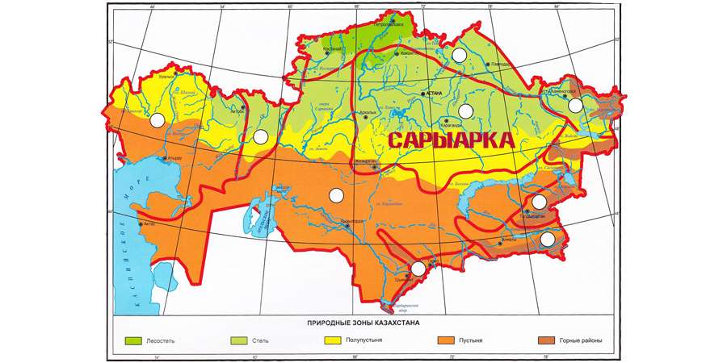

Почему эту землю предки нынешних казахов назвали Сарыарка? В научной литературе бытует прямой перевод на русский язык – Желтая спина. Сары — переведено как желтый, золотистый, рыжий цвет, и Арка — спина, позвоночник, спинной хребет. Казалось бы, все просто. Характеризуя мелкосопочник казахи использовали цвет для обозначения степи и арка для гор. Но многие ученые задались вопросом, нет ли здесь более глубоко смысла?
Ученый Серикбол Кондыбай обосновывает происхождение слова Арка от слова Аргы, которое имеет смысл как потусторонний, древний. Казахское слово арка – спина, обратная невидимая, потусторонняя сторона, можно сопоставить с древнегреческим архэ, архи, архайос, совпадающим с казахским словом как по форме, так и по смыслу. Этот древнегреческий корень лежит в основе таких слов, как археология, архив, архаика. Таким образом слово Арка-имеет этимологию как древний, потусторонний.
Второе слово Сары, которое переводился, как желтый, рыжий, светлый, возможно имеет другой смысл перевода: великий, важный. Действительно, слово Сары очень часто встречается в именах например: Сарыбек, Сарыбай, Сармантай, Сартай, Сарканд или таких топонимах как Сарысу, Сарытау. Здесь слово «сары» несет в себе явно не цветовое значение, а скорее обозначает величие или значительность.
Таким образом, слово Сарыарка должно переводиться дословно как «Великая древняя обжитая земля».
Источник: forum-eurasica.ruЖили когда-то в степях Сарыарки несколько кочевых племен. Всего у них было вдоволь, были они счастливы. И поскольку все у них было, эти люди так и говорили: «Всего у нас достаточно, все у нас есть, вот только одного у нас нет. Нет у нас батыра, который мог бы защитить нас, наше благополучие и наше богатство».
И вот в одной семье родился ребенок с золотым хохолком на голове. Увидев, что мальчик этот необычный, собрался весь народ и затеял великий пир по случаю рождения своего батыра.
Мальчик рос не по дням, а по часам и через некоторое время стал настоящим богатырем. Его родственники, чтобы не сглазить его, стали называть его не собственным именем, а придуманным — Толагай. Так за ним это имя и утвердилось.
В один год перестали идти дожди, жара высушила землю. Бедствие, обрушившееся на людей, заставило задуматься и Толагая. И тогда обратился он за советом к старцу по имени Дана.
Старец Дана ему сказал: «Дорогой Толагай, мы живем на открытой местности, рядом с нами нет гор, вокруг которых останавливались бы тучи. Поэтому и дождей у нас нет».
На это Толагай сказал: «Дедушка, если вы разрешите, я пойду и принесу на своей спине такую гору. Можно так сделать? » Тогда старик сказал: «Свет моих очей, Толагай, ты думаешь о своей родной земле, о своем народе, переживаешь за них! Нелегко принести на спине гору. И, тем не менее, на юге есть огромные горы Алатау, и там есть у них свой старец. Сходи, попроси у него разрешения!» И Дана благословил Толагая, пожелав ему доброго пути.
Отправился Толагай к горам Алатау, дошел до Великих гор и приветствовал их: «Мир Вашему дому!» И изложил он тут горам свою просьбу. Древние горы Алатау выслушали его, оказали ему почет, поняли и, выполняя его просьбу, положили ему на плечи молодую гору, совсем еще ребенка среди гор.
И вот пошел Толагай, неся на себе гору, поначалу шел он легко, но через некоторое время тяжесть горы стала сказываться, ослабел Толагай. Прошло много времени, пока батыр медленно шел к себе домой, осторожно неся на плечах молодую гору. Очень устал Толагай, едва добрался до края родной земли, как упал и заснул, а гора, которую он нес на плечах, так и придавила его.
Вот с того дня, говорят, Толагай спит под горой. Спит до сих пор. А маленькая гора-ребенок, которую принес батыр, с годами выросла, да так и называется — Толагай.
Источник: sauap.orgРассматривая историю создания Сарыарки, ее можно изучать как с географической позиции, так и с исторической.
Территория Сарыарки была свидетельницей многих исторический событий: древние Саки и Сарматы, эпоха Тюркского Каганата, Казахское Ханство, период Алаш Орды и СССР, современный Казахстан. Все это сильно повлияло на культуру жителей Сарыарки и оставило множество исторических артефактов.
Греческий «отец истории» Геродот называл саков массагетами. Саки проживали в период I тысячилетия до н.э. союзы и они делились по местоположению. В Жетысу, в горах Тянь-Шаня, по среднему течению Сырдарьи жили саки-тиграхауда. Они носили остроконечные шапки. В Приаралье и в низовьях Сырдарьи обитали саки-парадарайа — заморские саки. Южнее них расселялись саки-хаумаварга, они готовили напиток хаома. Греки называют их массагетами, даями. Даи, аргиппеи, исседоны кочевали в Северном Приаралье, Северном и Центральном Казахстане.
Известна царица саков в VI веке до н.э. - Томирис. Во времена ее правление на земли саков вторглись персидские войска во главе с царем Киром. Царица Томирис (570-520 гг. до н.э.) разгромила персов, а голову Кира бросила в бурдюк с кровью. Об этом писал римский историк Помпеи Трог.
Известным достоянием культуры саков является золотые доспехи, найденные в Южном Казахстане. Наиболее известным является Иссыкский “Алтын Адам”. В нем похоронен царевич 17-18 лет. 4000 золотых бляшек в виде фигурок зверей покрывают одежду и высокий конусообразный головной убор. Серебряная чаша с надписью доказывает, что сакам была известна письменность. Это захоронение получило название «Золотой человек» и является уникальным памятником культуры саков.
Задолго после истории Саков большую историческую насыщенность принесло время Казахского Ханства. Время Казахского ханства было насыщено переворотами, исторически важными местами и влиятельными людьми, насыщенной казахской культурой.
В эпоху Казахского Ханства было сформировано понятие, как “жуз”. Страну разделили на 3 жуза, подвластные каждые своему правителю. Территория Сарыарки стало местом самого большого Среднего Жуза. Важной частью жузом было разделение территории между казахскими родами. Основными племенами Среднего Жуза являются найманы, аргыны, кипчаки, коныраты, кереи, уаки.
Источник: kaz-ekzams.ruСарыарка – очень древняя, сильно разрушенная горная область, состоящая из выровненных возвышенностей и мелкосопочных низких гор.
В докембрийский период, т. е. в архейскую и протерозойскую эры, территория Сарыарки находилась под водой. В середине палеозоя, т. е. в силурийский период, поднимается западная часть Сарыарки. В верхнем палеозое, т. е. в карбоновый и пермский периоды, территория Сарыарки заканчивает поднятие восточной части в герцинскую складчатость. Значит, Карагандинский угольный бассейн и Экибастузский угольный бассейн образовались в карбоновый период верхнего палеозоя. За время мезозоя и кайнозоя в результате экзогенных процессов горы Сарыарки разрушились и превратились в низкие горы – это современное название мелкосопочника. Среди сопок раскинулись выровненные участки, большие и малые впадины, как лавины, различающиеся геологическим строением и рельефом. Восточная часть мелкосопочника приподнята, по сравнению с западной. Сарыарка образована из осадочных и магаматических пород (гранит, порфирит, кварцит) палеозоя. В формировании рельефа этих мест главную роль играли направления залегания. Поэтому эти низкие горы почти превращены в равнину. В некоторых местах остатки гор переходят в полого-холмистую равнину.
Сарыарка богата полезными ископаемыми. Карагандинский и Экибастузский угольные бассейны являются крупными топливными базами Республики Казахстан. Их отличие лишь в том, что Экибастузский уголь добывают на поверхности, а Карагандинский в глубине земли (шахты).
Жезказганское, Карсакпайское, Саякское, Атасуское и Коуныратское месторождения богаты рудами меди, железа и марганца. В Жайремском месторождении добывают редкие металлы.
Источник: www.hintfox.com 